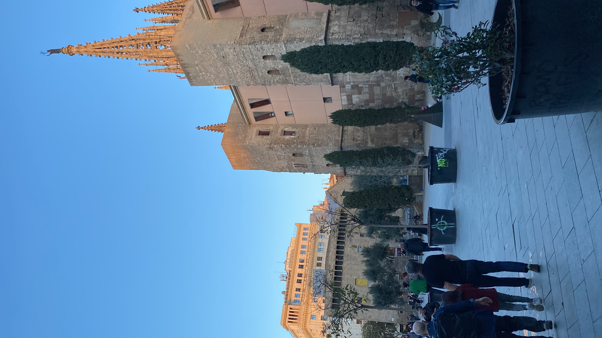
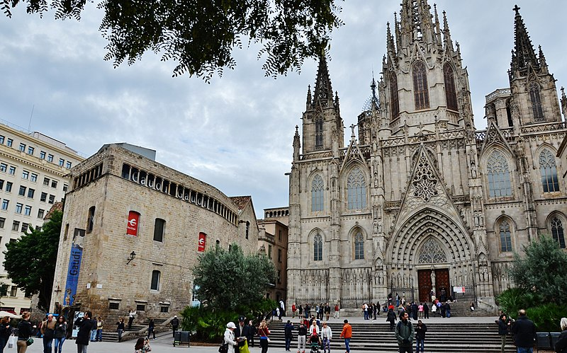

Course d'orientation dans le quartier Gauthique
Description :
Le quartier gothique, également connu sous le nom de Barri Gòtic en catalan, est l'un des quartiers
les plus emblématiques et historiques de Barcelone, en Espagne. Situé dans le cœur de la vieille ville, le
quartier gothique est un dédale de ruelles étroites, de places pittoresques et de bâtiments historiques qui
témoignent de l'histoire riche et mouvementée de la ville.
Ce quartier médiéval regorge de sites touristiques, notamment la majestueuse cathédrale de Barcelone
(Catedral de la Santa Creu i Santa Eulàlia), la Plaça del Rei avec son palais royal et ses remparts romains, ainsi
que de nombreux musées, églises et bâtiments historiques.
Les rues pavées du quartier gothique sont bordées de boutiques artisanales, de bars à tapas
traditionnels et de cafés animés, ce qui en fait un lieu idéal pour flâner et découvrir l'atmosphère animée de
Barcelone.
En se promenant dans le quartier, les visiteurs peuvent admirer l'architecture médiévale
magnifiquement préservée, caractérisée par ses façades en pierre, ses arcades élégantes et ses détails
sculpturaux. Les petites places cachées et les passages secrets ajoutent à l'atmosphère mystérieuse et
enchanteresse du quartier.
Le quartier gothique est également le foyer de nombreux événements culturels et festivals tout au long
de l'année, notamment des concerts de musique, des expositions d'art et des célébrations traditionnelles
catalanes.
En résumé, le quartier gothique de Barcelone est un trésor historique et culturel, où l'ancien se mêle
au moderne pour créer une expérience unique pour les visiteurs. C'est un endroit incontournable pour découvrir
l'essence et l'âme de la ville de Barcelone.
......
Le quartier gothique est mon lieu favori à Barcelone. C'est là que nous passions la majorité de notre temps libre. Mais pour nous y introduire, nous avons fait une course d'orientation qui n'était pas très intéressante (je n'ai pas gagné) car nous étions tellement concentrés sur la carte ou les énigmes que nous ne pouvions pas regarder et apprécier les lieux. C'était pendant les temps libres que je m'amusais le plus en mangeant des glaces tout en marchant dans les rues. J'aimais bien me perdre pour retrouver mon chemin avec Maps. C'est aussi ici que j'ai acheté mes souvenirs.
Voici quelque photo :
